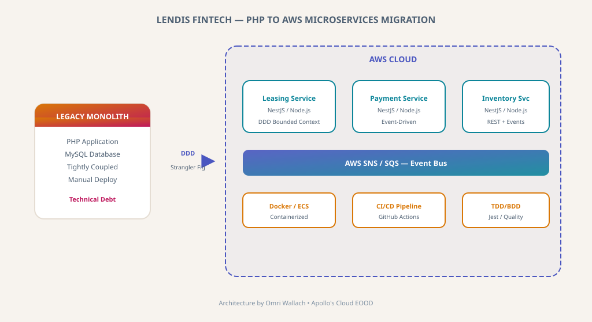

PHP to AWS Microservices Migration for Lendis FinTech
Legacy PHP monolith to AWS microservices migration for Lendis FinTech. DDD decomposition, NestJS, event-driven architecture, zero-downtime transition.

Lendis FinTech — PHP to AWS Microservices Migration Architecture
Context
The Lendis platform handles complex financial workflows including lease management, payment processing, and inventory tracking. The PHP monolith had significant technical debt, requiring migration to a modern architecture supporting real-time event processing.
I led the architectural design ensuring zero-downtime transition to a cloud-native microservices platform.
Engineering Challenges
Monolith Decomposition
Applied Domain-Driven Design (DDD) to identify bounded contexts and define clean service boundaries.
Zero-Downtime Migration
Strangler fig pattern—incrementally routing traffic while maintaining backward compatibility.
Real-Time Event Processing
Event-driven architecture using AWS for lease lifecycle events and payment notifications.
Architectural Solutions
AWS Microservices
Node.js/NestJS backend with containerized services and event-driven patterns.
DDD Decomposition
Bounded contexts separating leasing, payments, and inventory domains.
Event-Driven Architecture
AWS SNS/SQS for reliable inter-service communication.
CI/CD & Quality
Automated pipelines with TDD/BDD practices.
Measurable Impact
Zero-Downtime Migration
Core logic migrated with zero customer-facing downtime.
Faster Delivery
Independent deployment enabled parallel feature development.
Improved Scalability
Event-driven architecture handles growing transaction volumes.
Engineering Standards
TDD/BDD and CI/CD improved codebase quality.